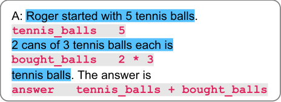
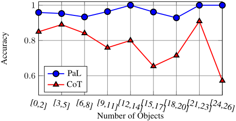
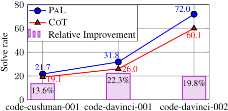
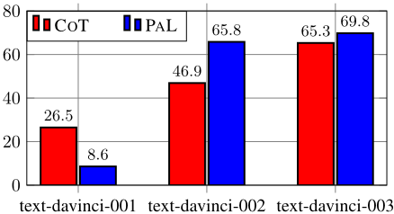
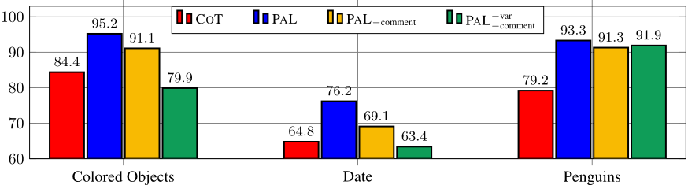
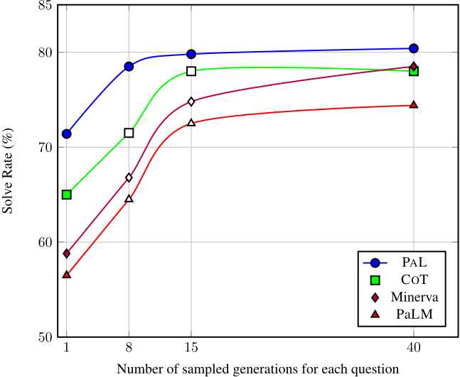
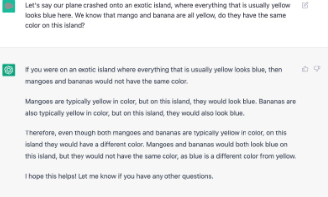
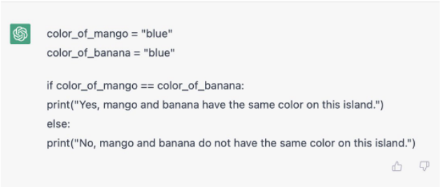
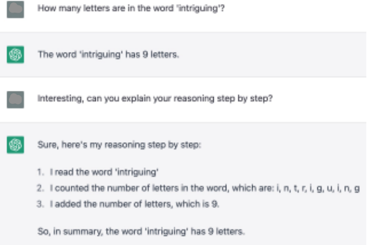
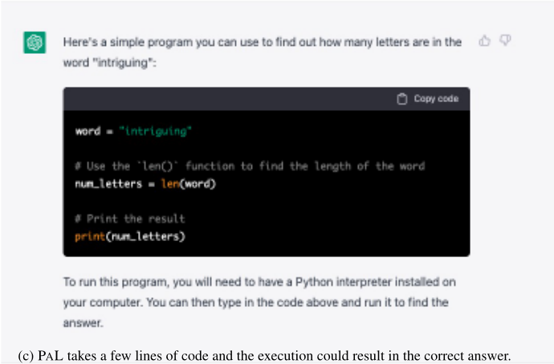

PAL: Program-aided Language Models
PAL：程序辅助语言模型（Program-aided Language Models）
简介
LLM 在 chain-of-thought (CoT) 推理中即使正确分解了问题，仍常在求解环节犯逻辑与算术错误，尤其在大数字与复杂计算上。PAL 提出：让 LLM 只负责把自然语言问题分解为自然语言注释与 Python 语句交错的中间推理步骤，把求解与计算完全卸载给 Python 解释器执行。在来自 BIG-Bench Hard 及其他基准的 13 个数学、符号与算法推理任务上，PAL（基于 Codex）全面超过更大的 PaLM-540B + CoT，在 GSM8K 上领先绝对 15%，在构造的大数字变体 GSM-HARD 上远比 CoT 稳健（61.5% vs 20.1%）。消融证明收益主要来自与解释器的协同而非提示本身，且有意义变量名是关键设计要素。对团队而言，这是'LLM 负责理解与规划、运行时负责精确执行'这一 Agent 工具调用范式的奠基性实证，可直接指导需要精确计算与状态跟踪的自动化任务设计。
问题
LLM 在 few-shot CoT 提示下擅长把自然语言问题分解为步骤，但在求解环节经常出现逻辑与算术错误，面对复杂算术或大数字时性能急剧下降；即使推理链分解正确，最终答案仍可能错误。
方法
提出 Program-Aided Language models (PAL)：prompt 中每个 in-context 示例为〈问题, 推理步骤〉二元组，推理步骤是自然语言（以注释语法书写、被解释器忽略）与 Python 语句的交错序列，不包含最终答案；测试时 LLM 生成同样的程序化推理链，交给标准 Python 解释器执行得到最终答案。提示设计上强调有意义的变量名以锚定问题实体，可由现有 CoT 示例快速改造（每基准 3-6 个示例），也可与 Least-to-Most 提示结合（分解用 NL、求解用 PL）。
关键结果
GSM8K：PAL（Codex）贪心解码准确率 72.0%，超过 PaLM-540B + CoT 绝对 15%（top-1），创造 few-shot SOTA；majority@40 采样下提升至 80.4%，比同采样数的 Minerva-540B 高 1.9%
GSM-HARD（大数字变体）：COT 从 65.6% 跌至 20.1%，DIRECT 从 19.7% 跌至 5.0%，PAL 保持 61.5%（相对下降仅 14.3%），比 COT 高绝对 40%
符号推理：COLORED OBJECTS 比 COT 高 8.8%（比 DIRECT 高 19.4%），PENGUINS 比 COT 高绝对 14.1%，DATE 比 COT Codex/PaLM-540B/LaMDA-137B 高 11.4%
算法任务：OBJECT COUNTING 达 96.7%（比 COT 高绝对 23.7%），REPEAT COPY 比 COT 高绝对 21.8%、比 DIRECT 高 9.3%
消融：让 LLM 自行'执行'生成的代码（不用解释器）在 GSM8K 仅 23.2%，远低于 PAL 的 72.0%，仅比 DIRECT 高 4.5 分
变量名消融：去除有意义变量名后平均准确率从 71.8% 降至 59%，低于 COT 的 63%
模型泛化：在较弱的 code-cushman-001/code-davinci-001 上 PAL 相对 COT 的提升保持一致；在代码能力足够强的 text-davinci-002/003 上 PAL 也优于 COT
Least-to-Most + PAL 在 GSM8K 与 SVAMP 各 500 例子集上进一步提升 solve rate
创新点
与 CoT 让 LLM 同时承担问题分解与求解不同，PAL 把计算卸载给解释器，最终答案'在程序正确的前提下'由构造保证正确；与此前外挂计算器或专用模块（如城市/日期生成器）的工作相比，PAL 生成通用 Python 代码，无需专用模块、约束解码或领域特定表示；与同期概念相近的 PoT（Chen et al., 2022）相比，验证范围扩展到符号与算法任务，并沿用与先前工作相同的 few-shot 示例，以解耦方法收益与示例选择的影响。
团队参考意义
相关度级别：high
命中能力域：3.2 提示工程 | 3.3 Agent 架构与工具使用 | 3.5 评测与可靠使用
理由：直接命中 3.2 提示工程：PAL 本身是一种程序化 CoT 推理提示模式，论文详细讨论了 few-shot 示例构造、NL 注释与代码交错、有意义变量名等提示设计要素及其消融。同时直接命中 3.3 Agent 架构与工具使用：'LLM 生成程序、外部运行时执行'正是工具调用与 harness 设计的奠基范式，论文证明单 Agent 执行可靠性可通过卸载计算给确定性运行时大幅提升。其 GSM-HARD 鲁棒性变体、'解释器 vs 提示'归因消融对 3.5 评测与可靠使用也有直接方法借鉴。团队构建代码生成、测试辅助、知识库问答等自动化流程时，凡涉及精确算术、日期计算、列表/表格状态跟踪的环节，都可套用此模式。
建议动作：深入精读并做内部分享
中文全文
arXiv:2211.10435v2 [cs.CL] 2023年1月27日
PAL: Program-aided Language Models
Luyu Gao * 1 Aman Madaan * 1 Shuyan Zhou * 1 Uri Alon 1 Pengfei Liu 1 2 Yiming Yang 1 Jamie Callan 1 Graham Neubig 1 2
{ luyug,amadaan,shuyanzh,ualon,pliu3,yiming,callan,gneubig } @cs.cmu.edu
Abstract
大语言模型（Large Language Models，LLM）近来展现出令人瞩目的能力：在测试时仅提供少量示例（“少样本提示”，few-shot prompting）的情况下，即可完成算术与符号推理任务。这一成功很大程度上可归功于“思维链”（chain-of-thought，CoT）等提示方法，这类方法让 LLM 既通过将问题描述分解为若干步骤来理解问题，又逐一求解问题的每个步骤。尽管 LLM 似乎擅长这种逐步分解，但在求解部分，即使问题已被正确分解，LLM 也常常出现逻辑和算术错误。本文提出程序辅助语言模型（Program-Aided Language models，PAL）：一种新方法，利用 LLM 阅读自然语言问题并生成程序作为中间推理步骤，而将求解步骤交给 Python 解释器等运行时环境执行。在 PAL 中，将自然语言问题分解为可运行的步骤仍是 LLM 唯一需要学习的任务，而求解则委托给解释器完成。我们在来自 BIG-Bench Hard 及其他基准测试（benchmark）的 13 个数学、符号和算法推理任务上展示了神经 LLM 与符号解释器之间的这种协同效应。在所有这些自然语言推理任务中，使用 LLM 生成代码并借助 Python 解释器进行推理，所得结果比规模大得多的模型更为准确。例如，使用 CODEX 的 PAL 在数学应用题 benchmark GSM8K 上取得了最先进的少样本准确率，以绝对 15% 的 top1 优势超越了使用思维链的 PaLM-540B。我们的代码和数据已在 http://reasonwithpal.com 公开。
* 前三位作者贡献相同。1 美国卡内基梅隆大学语言技术研究所 2 美国 Inspired Cognition。
1. Introduction
就在两年之前，推理还被视为大语言模型（large language models, LLMs）尚未攻克的最重大挑战之一（Marcus, 2018; 2020; Garcez & Lamb, 2020）。近来，通过少样本提示（few-shot prompting）（Brown et al., 2020），LLMs 在包括常识推理（Wei et al., 2021; Sanh et al., 2021; Madaan et al., 2022）、数学推理（Lewkowycz et al., 2022; Wu et al., 2022; Mishra et al., 2022）和符号推理（Yao et al., 2022; Ahn et al., 2022）在内的广泛任务上展现出了令人瞩目的成功。
这一进程被那些要求 LLMs 生成其显式推理步骤的方法所加速，例如“思维链”（chain-of-thought）（Wei et al., 2022）、“草稿板”（scratchpads）（Nye et al., 2021）以及“由易到难”（least-to-most）（Zhou et al., 2022）等提示方法。其中，被广泛使用的思维链（COT）方法向模型呈现到达最终答案所需的显式中间步骤，随后期望模型对实际测试样例应用类似的分解，并逐步得出准确的最终答案（Ling et al., 2017; Amini et al., 2019）。然而，尽管 LLMs 能够将自然语言问题分解为若干步骤并执行简单的算术运算，但在处理复杂算术（Hendrycks et al., 2021; Madaan & Yazdanbakhsh, 2022）或大数（Nogueira et al., 2021; Qian et al., 2022）时，其性能会急剧下降。事实上，即使在一个基于 PaLM 的模型上使用 164B 个 token 的显式数学内容进行微调，据报道其最常见的两类失败仍是“推理错误”和“计算错误”（Lewkowycz et al., 2022）。
在本文中，我们提出程序辅助语言模型（Program-Aided Language model, PAL）：一种新颖的方法，它利用 LLM 读取自然语言问题并生成程序作为推理步骤，但将求解步骤卸载给 Python 解释器执行，如图 1 所示。这种卸载利用了能够将自然语言问题分解为程序化步骤的 LLM——幸运的是，借助当代在自然语言和编程语言上预训练的最先进 LLM，这样的模型已然可得（Brown et al., 2020; Chen et al., 2021a; Chowdhery et al., 2022）。自然语言的理解与分解需要 LLM 来完成，而求解与推理则可以由外部求解器完成。这填补了类思维链方法中的一个重要缺口：在这类方法中，推理链可能是正确的，最终却得出错误的答案。
![Figure 1: A diagram illustrating PAL: Given a mathematical reasoning question, Chain-of-thought (left) generates intermediate reasoning steps of free-form text. In contrast, Program-aided Language models (PAL, right) generate intermediate steps and Python code. This shifts the role of running the reasoning steps from the language model to the Python interpreter. The final answer is obtained by running the generated reasoning chain. Chain-of-thought reasoning is highlighted in blue; PAL steps are highlighted in gray and pink ; the Python interpreter run is highlighted in black and green.](assets/a483/figures/fig_1.png)
我们在 13 个算术与符号推理任务上展示了 PAL 的有效性。在所有这些任务中，使用 Codex（Chen et al., 2021a）的 PAL 都优于使用思维链（chain-of-thought, CoT）提示的 PaLM-540B 等大得多的模型。例如，在流行的 GSM8K 基准测试（benchmark）上，PAL 取得了最先进的准确率，以绝对 15% 的 top1 准确率优势超越了使用 CoT 的 PaLM-540B。当问题包含大数时——我们将该数据集称为 GSM-HARD——PAL 以绝对 40% 的优势超越 COT。我们相信，神经大语言模型（LLM）与符号解释器之间的这种无缝协同，是迈向通用且鲁棒 AI 推理器至关重要的一步。
2. Background: Few-shot Prompting
少样本提示（few-shot prompting）利用大语言模型（LLM）的能力，通过作为测试时输入一部分而提供的一组 k 个示例来求解任务（Brown et al., 2020; Liu et al., 2021; Chowdhery et al., 2022），其中 k 通常是较低的个位数。这些输入-输出示例 { ( x i , y i ) } k i =1 被拼接成一个提示 p ≡ 〈 x 1 · y 1 〉 ‖ 〈 x 2 · y 2 〉 ‖ . . . ‖ 〈 x k · y k 〉，其中 ' · ' 表示输入与输出的拼接，' ‖ ' 表示不同示例之间的拼接。在推理时，测试实例 x test 被追加到提示之后，p ‖ x test 被传递给模型，模型尝试对 p ‖ x test 进行补全，从而生成答案 y test。注意，这种少样本提示并不会修改底层的 LLM。
Wei et al. (2022) 额外地用思维链（chain-of-thought，CoT）中间步骤来增强每个上下文内（in-context）示例。具体而言，在 CoT 设置中，每个上下文内示例是一个三元组 〈 x i , t i , y i 〉，其中 x i 和 y i 与之前一样是输入-输出对，而 t i 是对从输入 x i 得出输出 y i 所需步骤的自然语言描述。示例见图 1。借助附加的“思考”（thoughts）t i，提示被设置为 p ≡ 〈 x 1 · t 1 · y 1 〉‖〈 x 2 · t 2 · y 2 〉‖ . . . ‖〈 x k · t k · y k 〉。
在推理时，新的问题 x test 像之前一样被追加到提示中并提供给 LLM。关键在于，模型的任务是同时生成思考 t test 和最终答案 y test。这种通过提示让模型首先生成推理过程 t test 的方法，在广泛的任务上提升了答案 y test 的准确率（Wang et al., 2022a; Wei et al., 2022; Zhou et al., 2022; Wang et al., 2022b）。
3. Program-aided Language Models
在程序辅助语言模型（Program-aided Language model）中，我们提出将给定自然语言问题 x 的思考 t 生成为自然语言（NL）语句与编程语言（PL）语句交错的形式。由于我们将求解步骤委托给解释器，因此我们不在提示中提供示例的最终答案。也就是说，PAL 中的每个上下文示例（in-context example）都是一个二元组 〈 x i , t i 〉 ，其中 t j = [ s 1 , s 2 , . . . , s N ]，每个 s i ∈ NL ∪ PL，即属于 NL 或 PL 的 token 序列。因此，完整的提示为 p ≡ 〈 x 1 · t 1 〉 ‖ 〈 x 2 · t 2 〉 ‖ . . . ‖ 〈 x k · t k 〉 。
给定测试实例 x test，我们将其追加到提示中，并将 p ‖ x test 输入到语言模型（LM）中。我们让 LM 生成预测 t test，其中既包含中间步骤，也包含与之对应的程序化语句。

示例 图 1 中示例的特写如图 2 所示。思维链（chain-of-thought, CoT）仅将提示中的解法分解为诸如“Roger 一开始有 5 个网球”和“2 罐网球、每罐 3 个，共 6 个”这样的自然语言步骤，而在 PAL 中，我们还会为每个这样的 NL 步骤补充其对应的程序化语句，例如 tennis balls = 5 和 bought balls = 2 * 3。这样，模型学会生成一个能为测试问题提供答案的程序，而不是依赖 LLM 来正确执行计算。
我们通过提示让语言模型使用注释语法（例如 Python 中的 ' # ... '）来生成 NL 中间步骤，从而使其会被解释器忽略。我们将生成的程序 t test 传递给其对应的求解器并运行，得到最终运行结果 y test。在本工作中，我们使用标准的 Python 解释器，但它也可以是任何求解器、解释器或编译器。
为 PAL 构建提示 在我们的实验中，只要现有工作的提示可用，我们就加以利用；否则，我们随机选择与先前工作相同数量（3-6 个）的示例，为每个基准测试（benchmark）创建一个固定的提示。在所有情况下，我们都将自由格式的文本提示扩充为 PAL 风格的提示，并在需要时利用 for 循环和字典等编程结构。总体而言，编写 PAL 提示既简单又快捷。
我们还确保提示中的变量名能够有意义地反映其作用。例如，描述篮子中苹果数量的变量应具有诸如 num apples in basket 这样的名称。这使生成的代码与问题中的实体保持关联。在第 6 节中，我们将展示这种有意义的变量名至关重要。值得注意的是，还可以增量地运行各 PL 片段，并将执行结果反馈给 LLM，以生成后续的代码块。为简单起见，在我们的实验中，我们采用了单次、事后（post-hoc）的执行。
本工作聚焦于 CoT 风格的推理链，但在附录 I 中，我们展示了 PAL 也能改进 Least-toMost (Zhou et al., 2022) 提示，这类提示所引入的推理链会将问题分解为子问题。
4. Experimental Setup
4.1. Mathematical Reasoning
我们在八个数学应用题数据集上对 PAL 进行了评估。这些任务中的每个问题都是小学水平的代数应用题。图 3 展示了一个问题示例以及 PAL 的示例提示。我们发现，使用显式的自然语言（NL）中间步骤并不能进一步有益于这些数学推理任务，因此我们在提示中只保留了有意义的变量名。
**GSM-HARD** 大语言模型（LLM）能够用较小的数字进行简单计算。然而，Madaan & Yazdanbakhsh (2022) 发现，在流行的数学推理问题数据集 GSM8K 中，50% 的数字是 0 到 8 之间的整数。这就引出了一个问题：LLM 能否泛化到更大的数字和非整数？我们通过将 GSM8K 问题中的数字替换为更大的数字，构建了一个更难的 GSM8K 版本，并将其称为 GSM-HARD。具体来说，问题中的其中一个数字被替换为一个最多 7 位的随机整数。有关这个新数据集的更多细节见 H.1。
4.2. Symbolic Reasoning
We applied PAL to three symbolic reasoning tasks from BIG-Bench Hard (Suzgun et al., 2022), which involve reasoning about objects and concepts: (1) COLORED OBJECTS requires answering questions about colored objects on a surface. This task requires keeping track of relative positions, absolute positions, and the color of each object. Figure 4 shows an example for a question and example PAL prompt. (2) PENGUINS describes a table of penguins and some additional information in natural language, and the task is to answer a question about the attributes of the penguins, for example, ' how many penguins are less than 8 years old? '. While both PENGUINS and COLORED OBJECT tasks require tracking objects, PENGUINS describes dynamics as well, since the penguins in the problem can be added or removed. Figure 17 in Appendix J.2 shows an example for a question, a chain-of-thought prompt, and PAL prompt. (3) DATE is a date understanding task that involves inferring dates from natural language descriptions, performing addi- Q: I have a chair, two potatoes, a cauliflower, a lettuce head, two tables, a cabbage, two onions, and three fridges. How many vegetables do I have?
# note: I'm not counting the chair, tables, or fridges vegetables_to_count = { 'potato': 2, 'cauliflower': 1, 'lettuce head': 1, 'cabbage': 1, 'onion': 2 } answer = sum(vegetables_to_count.values())
| GSM8K | GSM-HARD | SVAMP | ASDIV | SINGLEEQ | SINGLEOP | ADDSUB | MULTIARITH | |
|---|---|---|---|---|---|---|---|---|
| DIRECT Codex | 19.7 | 5.0 | 69.9 | 74.0 | 86.8 | 93.1 | 90.9 | 44.0 |
| COT UL2-20B | 4.1 | - | 12.6 | 16.9 | - | - | 18.2 | 10.7 |
| COT LaMDA-137B | 17.1 | - | 39.9 | 49.0 | - | - | 52.9 | 51.8 |
| COT Codex | 65.6 | 23.1 | 74.8 | 76.9 | 89.1 | 91.9 | 86.0 | 95.9 |
| COT P a LM-540B | 56.9 | - | 79.0 | 73.9 | 92.3 | 94.1 | 91.9 | 94.7 |
| COT Minerva 540B | 58.8 | - | - | - | - | - | - | - |
| PAL | 72 | 61.2 | 79.4 | 79.6 | 96.1 | 94.6 | 92.5 | 99.2 |
| | GSM8K | GSM-HARD | SVAMP | ASDIV | SINGLEEQ | SINGLEOP | ADDSUB | MULTIARITH |
tion and subtraction of relative periods of time, and having some global knowledge such as 'how many days are there in February', and performing the computation accordingly. Appendix J.3 shows example prompts.
4.3. Algorithmic Tasks
最后，我们在算法推理任务上对 PAL 与思维链（COT）进行了比较。这类任务是指人类程序员可以凭借对问题的先验知识编写出确定性程序的任务。我们实验了两种算法任务：OBJECT COUNTING 和 REPEAT COPY。OBJECT COUNTING 涉及回答关于属于某一类型的物体数量的问题。例如，如图 5 所示：“我有一把椅子、两个土豆、一个花椰菜、一颗生菜、两张桌子……我有多少个蔬菜？”）。REPEAT COPY 要求根据指令生成一个单词序列。例如，如附录 J.6 所示：“把单词 duck 重复四次，但在重复到一半时也要说 quack”）。
5.1. Math Results
表 1 展示了以下结果：在所有任务中，使用 Codex 的 PAL 在所有数据集上以 top1 解码刷新了少样本（few-shot）最先进水平，超越了 COTCodex、COTPaLM-540B，以及在显式数学内容上进行过微调的 COTMinerva 540B。
有趣的是，在某些数据集（如 ASDIV）上，COT 使用 Codex 也比使用 PaLM540B 有更好的表现，但在另一些数据集（如 SVAMP）上则不如 PaLM-540B。然而，使用 PAL 能进一步提高所有数据集上的解题率。
GSM-HARD 在 GSM-HARD（表 1）上，DIRECT 的准确率从 19.7% 骤降至 5.0%（相对下降 74%），COT 的准确率从 65.6% 降至 20.1%（相对下降近 70%），而 PAL 则保持稳定，为 61.5%，仅下降 14.3%。即使我们将 COT 的提示（prompt）替换为包含大数的提示，其在 GSM-HARD 上的结果也没有改善（附录 B）。这表明 PAL 不仅在标准基准测试（benchmark）上能取得更好的结果，而且鲁棒性也强得多。事实上，由于 PAL 将计算卸载给 Python 解释器，只要所生成的程序正确，任何复杂的计算都能被准确执行。
| COLORED OBJECT | PENGUINS | DATE | REPEAT COPY | OBJECT COUNTING | |
|---|---|---|---|---|---|
| DIRECT Codex | 75.7 | 71.1 | 49.9 | 81.3 | 37.6 |
| COT LaMDA-137B | - | - | 26.8 | - | - |
| COT PaLM-540B | - | 65.1 | 65.3 | - | - |
| COT Codex | 86.3 | 79.2 | 64.8 | 68.8 | 73.0 |
| PAL Codex | 95.1 | 93.3 | 76.2 | 90.6 | 96.7 |
| | COLORED OBJECT | PENGUINS | DATE | REPEAT COPY | OBJECT COUNTING |
大数还是错误推理？GSM-HARD 上的失败究竟是主要由于大语言模型（LLM）无法进行算术运算，还是问题中的大数“混淆”了 LM，使其生成了不合理的中间步骤？为了探究这一问题，我们评估了 COT 针对同一问题的两个版本（含大数与不含大数）所生成的输出。我们发现，在我们分析的 25 个案例中，有 16 个案例里 COT 生成了几乎完全相同的自然语言“思考”，这表明其主要失败模式是无法准确地执行算术运算。示例输出见附录中的表 11。
| GSM8K | |
|---|---|
| COT UL2-20B | 7.3 |
| COT LaMDA-137B | 27.7 |
| COT Codex | 78 |
| COT P a LM-540B | 74.4 |
| COT Minerva 540B | 78.5 |
| PAL Codex | 80.4 |
| | GSM8K |
多样本生成 正如 Wang et al. (2022b) 所发现的，思维链（CoT）风格的方法可以通过采样 k > 1 个输出并使用多数投票来选择最终答案，从而获得进一步改进。因此，我们使用核采样（nucleus sampling）(Holtzman et al., 2019) 重复了贪心解码实验，其中按照 Lewkowycz et al. (2022) 的设置取 p = 0.95 和 k = 40，温度设为 0.7。如表 3 所示，这将 PAL 在 GSM8K 上的准确率从 72.0% 进一步提升至 80.4%，在使用相同样本数量的情况下，比 Minerva-540B 的准确率高出 1.9%。
5.2. Symbolic Reasoning & Algorithmic Tasks Results
符号推理与算法任务的结果如表 2 所示。在 COLORED OBJECTS 上，PAL 比强大的思维链（COT）提升了 8.8%，比标准的直接提示（direct prompting）提升了 19.4%。在 PENGUINS 上，PAL 相比 COT 取得了 14.1% 的绝对提升。在 DATE 上，PAL 进一步相比 COT Codex、PaLM-540B 和 LaMDA-137B 均取得了 11.4% 的提升。
表 2 最右侧两列表明，PAL 已接近完全解决 OBJECT COUNTING 任务，达到 96.7%，相比 COT 取得 23.7% 的绝对提升。类似地，在 REPEAT COPY 上，PAL 大幅超越 COT，绝对提升达 21.8%。令人惊讶的是，在 REPEAT COPY 上，DIRECT 提示的表现优于 COT。然而，PAL 在 REPEAT COPY 上比 DIRECT 提升了 9.3%。

PAL 是否对问题的复杂度敏感？我们考察了随着输入问题复杂度的增长，PAL 与 COT 的性能如何变化，其中复杂度以 COLORED OBJECTS 问题中对象的数量来衡量。如图 6 所示，在所有输入长度下，PAL 均优于 COT。随着问题中对象数量的增加，COT 的准确率不稳定并出现下降，而 PAL 始终保持在接近 100% 的水平。关于 token 级预测的更多分析见附录 G。
7

6. Analysis
PAL 能否与更弱的语言模型（LM）搭配使用？在第 5 节的所有实验中，PAL 使用的都是 code-davinci-002 模型；但 PAL 能否与更弱的代码模型搭配使用？我们在两种提示方法均使用相同的更弱基础 LM（code-cushman-001 和 code-davinci-001）的情况下，将 PAL 与思维链（COT）进行了比较。如图 7 所示，尽管 code-cushman-001 和 code-davinci-001 的绝对准确率较低，但 PAL 相对于 COT 的提升幅度在各模型之间保持一致。这表明 PAL 可以与更弱的模型搭配使用，同时其优势也能优雅地扩展到更强的模型上。
PAL 能否与自然语言 LM 搭配使用？我们还使用 text-davinci 系列对 PAL 进行了实验。图 8 展示了以下有趣的结果：当基础 LM 的“代码建模能力”较弱时（使用 text-davinci-001），COT 的表现优于 PAL。然而，一旦 LM 的代码建模能力足够高（使用 text-davinci-002 和 text-davinci-003），PAL 便优于 COT，且 PAL text-davinci-003 的表现几乎与 PAL code-davinci-002 相当。这表明 PAL 并不局限于代码 LM，只要具备足够高的编码能力，它也能与主要为自然语言而训练的 LM 搭配使用。
PAL 的优势究竟来自 Python 提示，还是来自解释器？按照 Nye et al. (2021); Madaan et al. (2022) 的做法，我们实验了生成 Python 代码，同时要求神经 LM 在不使用解释器的情况下自行“执行”代码。我们构建了与 PAL 类似的提示，区别在于这些提示中确实包含最终答案。这种方法在 GSM8K 上取得了 23.2 的解题率，远低于 PAL（72.0），仅比 DIRECT 高 4.5 分。这些结果强化了我们的假设：PAL 的主要收益来自与解释器的协同作用，而不仅仅是拥有更好的提示。更多细节见附录 B。关于代码提示相较于文本提示所具优势的更多讨论，见附录 G。

变量名是否重要？在我们所有的实验中，PAL 提示里都使用了有意义的变量名，以便于模型将变量锚定（grounding）到其所代表的实体上。然而，对 Python 解释器而言，变量名本身并无意义。为了衡量有意义变量名的重要性，我们实验了两种提示变体：
结果如图 9 所示。在 COLORED OBJECTED 和 DATE 任务中，移除中间的自然语言（NL）注释但保留有意义的变量名（PAL - comment）后，结果相比完整的 PAL 提示略有下降，但其准确率仍高于基线 COT。若同时移除变量名（PAL - var - comment），准确率会进一步下降，且表现差于 COT。由于变量名对代码质量有重要影响（Gellenbeck & Cook, 1991; Takang et al., 1996），而 Codex 主要是在有意义的变量名上训练的，因此有意义的变量名理应只会使其推理更加容易，Madaan et al. (2022) 也得出了同样的发现。
7. Related Work
Prompting Few-shot prompting (Brown et al., 2020) has been shown to be an effective approach for a variety of tasks (Liu et al., 2021) ranging from text- (Gehrmann et al.,

2021; Reif et al., 2021; Wei et al., 2021; Sanh et al., 2021) to code-generation (Chen et al., 2021b). Methods such as chain-of-thought prompting (COT) have further unlocked a variety of reasoning tasks, boosting the performance of models on a variety of benchmarks. Nevertheless, all previous approaches suffer from inaccuracy in arithmetic calculation and incorrect reasoning (Lewkowycz et al., 2022; Hendrycks et al., 2021; Madaan & Yazdanbakhsh, 2022). PAL avoids these problems by offloading the calculation and some of the reasoning to a Python interpreter, which is correct by construction, given the right program. Further, not only that PAL can improve the standard chain-of-thought, it can improve least-to-most prompting (Zhou et al., 2022) as well, as we show in Appendix I.
LMs with external tools Several prior works have equipped neural models with specialized modules. For example, Cobbe et al. (2021) employ a calculator for arithmetic operations as a post hoc processing, and Demeter &Downey (2020) add specialized modules for generating cities and dates. Unlike these works, PAL generates code for a Python interpreter, which is general enough to handle both arithmetic calculations and dates, without specialized modules and ad-hoc fixes. Chowdhery et al. (2022) and Wei et al. (2022) have also experimented with external calculators; however, the calculator had improved Codex by only 2.3% (absolute) on GSM8K and improved PaLM-540B by 1.7%, while PAL improves Codex by 6.4% on the same benchmark (Section 5.1). Similarly to our work, Chowdhery et al. (2022) have also experimented with generating Python code for solving the GSM8K benchmark, but their experiments resulted in lower accuracy than the standard PaLM-540B that uses chain-of-thought. Pi et al. (2022) pretrain the model on execution results of random expressions on a calculator, instead of using the solver at test time as well. While their model can hypothetically perform arithmetic better than other pretrained LMs, their results on the SVAMP benchmark are much lower: 57.4% using a T5-11B
model, while PAL achieves 79.4% on the same benchmark without any specialized pretraining.
Shortly after a preprint of our work was submitted to arXiv, another related work on 'program of thought prompting' (Chen et al., 2022) was also submitted to arXiv. Their method is conceptually similar to ours, but PoT (1) only demonstrates efficacy on mathematical problems, whereas we demonstrate gains on symbolic and algorithmic benchmarks as well, and (2) chose benchmark-specific prompt examples, while we used the same prompt examples as previous work, to disentangled the benefit of our approach from the benefit of the choice of examples.
语义解析 我们的工作也可以被视为一种非常广义的语义解析（semantic parsing）形式，其中模型不再解析为严格的领域特定语言，而是生成自由格式的 Python 代码。一些工作使用上下文无关文法（Context-Free Grammar, CFG）来约束解码器，以生成领域特定的意义表示（Shin & Van Durme, 2021）或规范话语（canonical utterance），后者可被转换为类 Lisp 的意义表示（Shin et al., 2021）。相比之下，PAL 除 Python 代码外不需要任何约束或领域特定表示。此外，与其他领域特定语言相比，在 Python 上预训练的语言模型（LM）数量众多，这使得 Python 代码成为一种远为可取的表示形式。Andor et al. (2019) 为阅读理解任务生成任务特定的算术运算；Gupta et al. (2019) 设计了诸如 count 之类的神经模块来处理算术运算。PAL 通过生成通用的 Python 程序对这些工作进行了泛化，无需定义专门的模块。在技术上与我们最接近的工作可能是 Binder（Cheng et al., 2022），但它主要解决的是使用 SQL 和类 SQL 的 Python 来回答有关表格的问题。
8. Conclusion
我们提出了 PAL，一种使用程序作为中间推理步骤的全新自然语言推理方法。与现有的基于语言模型（LM）的推理方法不同，其主要思想是将求解与计算卸载给外部 Python 解释器，而不是让大语言模型（LLM）同时承担理解问题和求解两项任务。这样一来，只要程序化步骤预测正确，最终答案就能保证准确。我们在来自 BIG-Bench Hard 及其他基准测试（benchmark）的 13 个任务上展示了 LLM 与 Python 解释器之间这种无缝协同。在所有这些基准测试中，PAL 的表现均优于使用流行的“思维链”（CoT）方法的更大规模 LLM（如 PaLM-540B），并在所有基准测试上创造了新的最先进准确率。我们相信，这些结果为未来的神经符号 AI 推理器开辟了令人兴奋的研究方向。
Table of Contents
| 0 | 1 | 2 |
|---|---|---|
| A | Alternative Prompts without Meaningful Variable Names | 13 |
| B | Additional analysis on Arithmetic Reasoning | 13 |
| C | Effect of Using Language Models of Code | 14 |
| D | Analyzing the Effect of Increasing Number of Samples on PAL | 14 |
| E | Standard Deviations Across Multiple Order of Prompts | 17 |
| F | PAL Beyond Benchmarks | 17 |
| G | Closer Look into Token-level Behaviors of Different Mechanisms | 20 |
| H | Datasets | 20 |
| H.1 Creating GSM-HARD . . . . . . . . . . . . . . . . . . . . . . . . | . . . . . . . . . . . . . . . . . . . . 23 | |
| H.2 GSM-HARD Analysis . . . . . . . . . . . . . . . . . . . . . . . . | . . . . . . . . . . . . . . . . . . . . 23 | |
| I | Generalization of PAL to Least-to-Most Prompting | 24 |
| J | Prompts | 26 |
| J.1 Reasoning about Colored Objects . . . . . . . . . . . . . . . . . . | . . . . . . . . . . . . . . . . . . . . 26 | |
| J.2 Penguins in a Table . . . . . . . . . . . . . . . . . . . . . . . . . | . . . . . . . . . . . . . . . . . . . . 27 | |
| J.3 Date Understanding . . . . . . . . . . . . . . . . . . . . . . . . . | . . . . . . . . . . . . . . . . . . . . 28 | |
| J.4 Math . . . . . . . . . . . . . . . . . . . . . . . . . . . . . . . . . | . . . . . . . . . . . . . . . . . . . . 29 | |
| J.5 | Object Counting . . . . . . . . . . . . . . . . . . . . . . . . . . . | . . . . . . . . . . . . . . . . . . . . 31 |
| J.6 Repeat Copy . . . . . . . . . . . . . . . . . . . . . . . . . . . . . | . . . . . . . . . . . . . . . . . . . . 32 | |
| K | Success and Failure Modes in Symbolic Tasks | 33 |
| K.1 Colored Objects . . . . . . . . . . . . . . . . . . . . . . . . . . . | . . . . . . . . . . . . . . . . . . . . 33 | |
| K.2 Penguins in a Table . . . . . . . . . . . . . . . . . . . . . . . . . K.3 | . . . . . . . . . . . . . . . . . . . . 33 | |
| Date Understanding . . . . . . . . . . . . . . . . . . . . . . . . . | . . . . . . . . . . . . . . . . . . . . 34 |
| 0 | 1 | 2 |
13
A. Alternative Prompts without Meaningful Variable Names
a = 23 b = 5 c = 3 d = b * c e = a - d print (e)
（a）使用无信息量变量名的结构化解释（PAL - var）
# Olivia has $23 a = 23 # number of bagels bought b = 5 # price of each bagel c = 3 # total price of bagels d = b * c # money left e = a - d print (e)
（b）使用无信息量变量名但带有有用注释的结构化解释（PAL - var + comms）
money initial = 23 bagels = 5 bagel cost = 3 money spent = bagels * bagel cost money left = money initial - money spent result = money left print (result)
（c）PAL 提示
| 0 | 1 | 2 | 3 | 4 |
|---|---|---|---|---|
| Setting | COT | PAL - var | PAL - var + comms | PAL |
| Solve Rate | 63.1 | 59.0 | 69.0 | 71.8 |
| 0 | 1 | 2 | 3 | 4 |
对于数学问题，由于我们的标准提示并未使用太多注释，我们首先构建了将具有信息量的变量名替换为单个字母的替代提示（图 10）。表 4 中的结果显示出相当大的性能下降：从平均 71.8% 降至 59%。值得注意的是，将结构化输出完全移除、转而采用纯文本解释的消融设置正是思维链（CoT）设置，其解题率为 63%。这些结果凸显了文本的重要性，但更重要的是表明，将文本与程序化语句相结合能带来更大的性能提升——单独使用任何一种都是次优的。
B. Additional analysis on Arithmetic Reasoning
GSM-hard 与困难提示 GSM-HARD 实验所使用的提示是从 GSM8K 训练集中采样得到的。在提示中同样使用更大的数字是否会对 COT 有所帮助？为了探究这一点，我们构建了将数字改为更大数字的提示，使其与 GSM-HARD 中数字的分布相匹配。表 5 中的结果表明，即使提示中的数字与之匹配，性能也仅有适度的提升。这些结果表明，使用基于代码的推理链所获得的提升，可能无法仅通过为 COT 提供更好的少样本示例来实现。
14
| Regular Prompt | Prompt with Larger Numbers | |
|---|---|---|
| COT | 23.3 | 23.8 |
| | Regular Prompt | Prompt with Larger Numbers |
简洁代码 PAL 在少样本示例中使用的程序是多步骤的，逐步展示了推理过程的分解。这种分解是否必要？或者，我们能否返回一个单行表达式（见图 11b）来计算结果？表 6（第 4 行）中的结果表明情况并非如此。使用单行表达式时，PAL 的性能下降至直接提示的水平。
直接生成答案 PAL 首先生成以 Python 程序形式表示的推理链，并将生成的程序传递给运行时环境以获得答案。PAL 之所以更好，仅仅是因为程序式的中间推理链，还是这些提升源自将执行卸载给 Python 运行时环境？为了探究这一点，我们实验了一种变体，强制 LLM 在生成推理链之后生成答案（图 11e）。这一设置迫使 LLM 以生成的基于代码的推理为条件来生成答案，从而模拟运行时环境。表 6（第 5 行）中的结果表明，解题率下降至接近 DIRECT 的水平。这进一步印证了我们的假设：尽管当前的 LLM 能够出色地制定解决任务的高层计划，但它们仍然无法执行这些计划。
| Ablation | Solve Rate |
|---|---|
| DIRECT (no intermediate reasoning) | 19.7 |
| COT | 65.6 |
| PAL | 72 |
| Succinct Code | 47.8 |
| LLM Simulating Runtime | 23.2 |
| Ablation | Solve Rate |
C. Effect of Using Language Models of Code
在我们的实验中，我们重点评估了面向代码的语言模型的性能。我们旨在探究实验结果中观察到的额外性能提升究竟是由于使用了 Codex 这类模型，还是我们的方法即使对于基于文本的模型也同样有效。为此，我们使用基于文本的语言模型开展了额外的实验。我们的研究结果表明，PAL 方法并不局限于只能与 Codex 配合使用，只要模型足够强大，它同样可以应用于自然语言（NL）模型。具体而言，我们的结果显示，在 text-davinci-001 模型中，使用思维链（CoT）方法带来了更好的性能。
| Model | CoT | PaL |
|---|---|---|
| text-davinci-001 | 26.5 | 8.6 |
| text-davinci-002 | 46.9 | 65.8 |
| text-davinci-003 | 65.3 | 69.8 |
| Model | CoT | PaL |
D. Analyzing the Effect of Increasing Number of Samples on PAL
在 5.1 节中，我们展示了无论是单次采样，还是抽取 40 个样本并采用多数投票（majority voting），PAL 均优于强大的基线方法。图 12 展示了抽取样本数量在 1 到 40 之间时的变化趋势，插值估计结果表明，在整个样本数量范围内，PAL 始终保持竞争力。
def solution(): """Shawn has five toys. For Christmas, he got two toys each from his mom and dad. How many toys does he have now?""" ; toys_initial = 5 mom_toys = 2 dad_toys = 2 total_received = mom_toys + dad_toys total_toys = toys_initial + total_received result = total_toys return result
(b) Succinct Code
def solution(): """Shawn 有 10312864 个玩具。圣诞节时，他从妈妈和爸爸那里各得到了 13267894 个玩具。他现在有多少个玩具？""" toys_initial = 10312864 mom_toys = 13267894 dad_toys = 13267894 total_received = mom_toys + dad_toys total_toys = toys_initial + total_received result = total_toys return result
(c) Hard Examples in Prompt (PAL)
Example( question="Shawn 有 10312864 个玩具。圣诞节时，他从妈妈和爸爸那里各得到了 13267894 个玩具。他现在有多少个玩具？", thought="Shawn 一开始有 10312864 个玩具。如果他从妈妈和爸爸那里各得到 13267894 个玩具，那么就是多了 26535788 个玩具。10312864 + 26535788 = 36848652。", answer="36848652", ),
(d) Hard Examples in Prompt (CoT)
def solution(): """Shawn 有五个玩具。圣诞节时，他从妈妈和爸爸那里各得到了两个玩具。他现在有多少个玩具？""" ; toys_initial = 5 mom_toys = 2 dad_toys = 2 total_received = mom_toys + dad_toys total_toys = toys_initial + total_received result = total_toys return result ans = 9
(e) Generating Answers Directly
def solution(): return 5 + 2 + 2
16

17
E. Standard Deviations Across Multiple Order of Prompts
对于每个数学推理任务，我们使用提示的三种随机排序运行推理。如表 7 所示，由三个不同随机种子得到的结果之间的标准差极小。
| Average | COT Standard Deviation | Average | PAL Standard Deviation | |
|---|---|---|---|---|
| GSM8K | 65.6 | 1.1 | 72 | 0.16 |
| SVAMP | 74.8 | 0.19 | 79.4 | 0.2 |
| ASDIV | 76.9 | 0.65 | 79.6 | 0.14 |
| GSM-HARD | 23.3 | 0.49 | 61.2 | 0.91 |
| MAWPS-SingleEq | 89.1 | 0.54 | 96.1 | 0.3 |
| MAWPS-SingleOp | 91.9 | 0.55 | 94.6 | 0.36 |
| MAWPS-AddSub | 86 | 0.62 | 92.5 | 0.34 |
| MAWPS-MultiArith | 95.9 | 0.51 | 99.2 | 0.48 |
| | Average | COT Standard Deviation | Average | PAL Standard Deviation |
F. PAL Beyond Benchmarks
我们认为，符号推理是解决广泛任务的一个关键组成部分。在本节中，我们展示了一些任务的示例，这些任务乍看之下似乎并不需要使用程序作为中间推理步骤，但通过使用 PAL 风格的推理可以得到改进。我们使用 ChatGPT 工具来展示这些示例。1 与正文中使用的上下文学习（in-context learning）方法不同，在这里我们通过其中一条用户话语指示 ChatGPT 执行程序辅助推理。
在图 13 中，在思维链（CoT）风格的推理中，尽管推理链是正确的，最终答案却是错误的。相比之下，PAL 风格的推理不仅能够从问题中准确提取物体的颜色，还能生成正确的代码行，通过分支到不同的情况来得出各自对应的正确答案。
一个更有趣的例子是让大语言模型（LLM）数出单词 'intriguing' 中字母的数量。在图 14a 中，尽管通过用空格分隔字母的逐步解释看起来合理，但 ChatGPT 在这一显式推理之后并没有改变答案，仍然坚持错误的答案。明确指示模型在回答问题之前执行逐步推理，仍然会得到错误的答案。相比之下，PAL 风格的推理只需要几行代码，并且在这种情况下，代码执行确实产生了正确的答案。这些例子表明，即使是像 ChatGPT 这样表面上强大的模型，PAL 也能使其受益。
1 chat.openai.com
18

（a）在 CoT 风格的推理中，正确的中间推理链却导致错误的答案。
假设我们的飞机坠毁在一座奇异的岛屿上，在这座岛上，通常呈黄色的一切看起来都是蓝色的。我们知道芒果和香蕉都是黄色的，它们在这座岛上的颜色相同吗？请编写一个 Python 程序来回答这个问题。
(3/3

（b）在 PAL 中，代码的执行将产生正确的答案。
19

单词 'intriguing' 中有多少个字母？请一步一步思考
导致错误的答案。
单词 intriguing 中有多少个字母？你不擅长数东西，所以别尝试。只需编写一个我可以运行来得到答案的程序。

G. Closer Look into Token-level Behaviors of Different Mechanisms
在实证结果之外，我们进行了初步尝试，通过考察 COT 与 PAL 所生成的推理链在词元层面的对数似然，来更深入地理解采用不同推理机制的大语言模型（LLM）的行为。我们从 COLORED OBJECTS 数据集中随机选取了 20 个问题及其对应的 COT 和 PAL 解答，随后通过关注对数似然较低的词元，对这两种机制进行了人工比较。
我们的分析表明，COT 在与数字和数量信息相关的词元、空间形容词（例如 right-most）所锚定的位置、物体颜色等属性，以及指代物体的名词上，往往置信度较低。具体而言，在我们检查的 20 个样本中，我们发现这种情况分别出现在 7 个、6 个、2 个和 6 个样本中。相比之下，PAL 使用列表操作（例如 len(objects)），并通过列表索引（例如 object[3][0]）来访问物体及其相关属性。我们发现，LLM 在生成这类程序时通常具有较高的置信度。此外，我们观察到，虽然 COT 在不同上下文中对同一概念需要使用不同的表达方式，但 PAL 几乎总是使用相同的表达方式，这可能更为稳健。例如，当有 5 个物体时，COT 预测 'the right-most thing is the fifth item on the list'；而当物体数量为 3 时，COT 预测 'the right-most thing is the third item on the list'。偶尔，COT 还会预测 'the right-most thing is last item on the list'，这并未提供更具体的信息。相反，PAL 始终如一地以高置信度预测 objects[-1]。PAL 在表达式使用上更强的一致性和统一性，可以归因于编程语言明确且定义严谨的本质，这使得表达清晰而准确。
H. Datasets
在下表（表 8、表 9、表 10）中，我们给出了所考虑数据集的统计信息和示例。
| Dataset | N | Example |
|---|---|---|
| Reasoning about Colored Objects | 2000 | On the table, you see a bunch of objects arranged in a row: a purple paperclip, a pink stress ball, a brown keychain, a green scrunchiephone charger, a mauve fidget spinner, and a burgundy pen. What is the color of the object directly to the right of the stress ball? |
| Penguins in a Table | 149 | Here is a table where the first line is a header and each subsequent line is a penguin: name, age, height (cm), weight (kg) Louis, 7, 50, 11 Bernard, 5, 80, 13 Vincent, 9, 60, 11 Gwen, 8, 70, 15 For example: the age of Louis is 7, the weight of Gwen is 15 kg, the height of Bernard is 80 cm. We now add a penguin to the table: James, 12, 90, 12 How many penguins are less than 8 years old? |
| Date Understanding | 369 | 2015 is coming in 36 hours. What is the date one week from today in MM/DD/YYYY? |
| Dataset | N | Example |
| Dataset | N | Example |
|---|---|---|
| Object Counting | 1000 | I have a chair, two potatoes, a cauliflower, a lettuce head, two tables, a cabbage, two onions, and three fridges. How many vegetables do I have? |
| Repeat Copy | 32 | Repeat the word duck four times, but halfway through also say quack. |
| Dataset | N | Example |
21
| Dataset | N | Example |
|---|---|---|
| GSM8K (Cobbe et al., 2021) | 1319 | Olivia has $23. She bought five bagels for $3 each. How much money does she have left? |
| SVAMP (Patel et al., 2021) | 1000 | Each pack of dvds costs 76 dollars. If there is a discount of 25 dollars on each pack. How much do you have to pay to buy each pack? |
| ASDIV (Miao et al., 2020) | 2096 | Ellen has six more balls than Marin. Marin has nine balls. How many balls does Ellen have? |
| SINGLEOP (Koncel-Kedziorski et al., 2016) | 562 | If there are 7 bottle caps in a box and Linda puts 7 more bottle caps inside, how many bottle caps are in the box? |
| SINGLEEQ (Koncel-Kedziorski et al., 2016) | 508 | Benny bought a soft drink for 2 dollars and 5 candy bars. He spent a total of 27 dollars. How much did each candy bar cost? |
| ADDSUB (Koncel-Kedziorski et al., 2016) | 395 | There were 6 roses in the vase. Mary cut some roses from her flower garden. There are now 16 roses in the vase. How many roses did she cut? |
| MULTIARITH (Koncel-Kedziorski et al., 2016) | 600 | The school cafeteria ordered 42 red apples and 7 green apples for students lunches. But, if only 9 students wanted fruit, how many extra did the cafeteria end up with? |
| Dataset | N | Example |
22
| Question | COT: GSM | COT: GSMHard | Identical? |
|---|---|---|---|
| 90 single use contacts come in 1 box and will last Pete 45 days. Each box is $100.00 and currently 10% off. If he buys 2 boxes of contact, how much will each pair of contacts cost? | 90 contacts come in 1 box. Each box is $100.00. So 90 contacts cost $100.00. If he buys 2 boxes, then he will have 2 x 90 = 180 contacts. 180 contacts cost 2 x $100.00 = $200.00. So each pair of contacts costs $200.00 / 180 = $1.11. The answer is $1.11. | 90 single use contacts come in 1 box. So 1 box will last Pete 45 days. Each box is $5451440 and currently 10% off. So each box is $5451440 * 0.9 = $4906296. If he buys 2 boxes of con- tact, he will have 2 * 90 = 180 con- tacts. So each pair of contacts will cost $4906296 / 180 = $2725849. The answer is $2725849 | Yes |
| A chef bought 4 bags of onions. Each bag weighs 50 pounds. A pound of onions cost $1.50. How much did the chef spend? | The chef bought 4 bags of onions. Each bag weighs 50 pounds. So the total weight is 4 * 50 = 200 pounds. A pound of onions cost $1.50. So 200 pounds of onions cost 200 * 1.50 = 300 dollars. The answer is 300. | The chef bought 4 bags of onions. Each bag weighs 50 pounds. So the total weight is 4 * 50 = 200 pounds. A pound of onions cost $409201. So 200 pounds of onions cost 200 * 409201 = $81840200. The answer is $81840200. | Yes |
| A bag has a 5% discount. If it is marked $140, how much will you pay after the discount? | The discount is 5%. So you will pay 95% of the price. 95% of 140 is 133. The answer is 133. | The discount is 5%. So you will pay 95% of the price. 95% of $3921772.0722 is $3730654.0682. The answer is $3730654.0682 | Yes |
| A basket of green food costs $25 and a basket of red food costs $18. If you buy 3 baskets of green food and red food, how much will you have to pay in total if you get $2 off for each basket of red food? | 3 baskets of green food will cost 3 * 25 = 75 dollars. 3 baskets of red food will cost 3 * 18 = 54 dollars. But you get $2 off for each basket of red food. So you get 3 * 2 = 6 dollars off. So you pay 75 + 54 - 6 = 123 dollars. The answer is 123. | A basket of green food costs 9412763 dollars. A basket of red food costs 18 dollars. If you buy 3 baskets of green food and red food, you will have to pay 9412763 * 3 + 18 * 3 = 28238280 dollars. If you get 2 dollars off for each basket of red food, you will have to pay 28238280 - 18 * 2 = 28238244 dollars. The an- swer is 28238244 | No |
| A bumper car rink has 12 red cars. They have 2 fewer green cars than they have red cars. They have 3 times the number of blue cars as they have green cars. The rink also has yellow cars. If the rink has 75 cars in total how many yellow cars do they have? | There are 12 red cars. There are 2 fewer green cars than red cars. So there are 12 - 2 = 10 green cars. There are 3 times as many blue cars as green cars. So there are 3 * 10 = 30 blue cars. There are 12 + 10 + 30 = 52 cars that are not yellow. So there are 75 - 52 = 23 yellow cars. The answer is 23. | The rink has 9318738 red cars. They have 2 fewer green cars than red cars. So they have 9318738 - 2 = 9318736 green cars. They have 3 times the number of blue cars as green cars. So they have 3 * 9318736 = 27956208 blue cars. The total number of cars is 75. So the num- ber of yellow cars is 75 - 9318738 - 9318736 - 27956208 = -55,828,829. The answer is -55,828,829 | Yes |
| Question | COT: GSM | COT: GSMHard | Identical? |
23
H.1. Creating GSM-HARD
While replacing numbers in the question is easy using pattern matching, a more challenging aspect is recalculating the correct answer. GSM8K evaluation set contains 1319 samples, which is prohibitively expensive to perform manual re-calculation. Instead, we leverage PAL to assist obtaining the correct answers. For 71% of the examples where PAL is correct on GSM8K, we utilize the generated program and replace the initial value with the larger values. For example, if we create a harder version of the problem in Figure 3 by replacing $23 dollars with $15687 dollars, we correspondingly replace money initial=23 to money initial=15678 . Running the program could automatically produce the correct answer of the harder question. Notably, this annotation process assumes that a program that produces a correct answer to a GSM8K question indicates the correctness of the program itself. While this is not guaranteed due to possible spurious correlations, we manually checked 25 programs and found all of them are correct. For the incorrect 29% of the cases, we run PAL again and perform nucleus sampling (Holtzman et al., 2019) with temperature 0.7, and repeat the above process if any correct solution is found. Finally, the authors manually annotate the correct answer for 50 remaining cases that PAL was not able to solve after 100 iterations.
H.2. GSM-HARD Analysis
表 11 展示了在 GSM8K 和 GSM-HARD 上使用思维链（CoT）生成的思维内容。人工分析表明，大多数生成的思维内容（16/25）在 GSM8K 和 GSM-HARD 上是完全相同的，这说明更大的数字之所以主要导致性能下降，是由于大语言模型（LLM）无法完成算术运算。
24
I. Generalization of PAL to Least-to-Most Prompting
问：四年前，Kody 的年龄只有 Mohamed 的一半。如果 Mohamed 目前的年龄是 30 岁的两倍，那么 Kody 现在多大？ ↪ → 答：要回答“Kody 现在多大？”这个问题，我们需要知道：“Mohamed 现在多大？”、“Mohamed 四年前多大？”、“Kody 四年前多大？”。 ↪ →
(a) Least-to-Most Math Reducing Prompt
四年前，Kody 的年龄只有 Mohamed 的一半。如果 Mohamed 目前的年龄是 30 岁的两倍，那么 Kody 现在多大？ ↪ → 问：Mohamed 四年前多大？答：我们已知 Mohamed 目前的年龄是 30 岁的两倍，所以他目前是 30 * 2 = 60 岁。这意味着四年前他应该是 60 - 4 = 56 岁。答案是 56。 ↪ → ↪ → 问：Kody 现在多大？答：四年前，Kody 的年龄是 Mohamed 的一半，所以那时 Kody 应该是 56 / 2 = 28 岁。由于 Kody 四年前是 28 岁，她现在应该是 28 + 4 = 32 岁。答案是 32。 ↪ → ↪ →
(b) Least-to-Most Math Solving Prompt
# 四年前，Kody 的年龄只有 Mohamed 的一半。如果 Mohamed 目前的年龄是 30 岁的两倍，Kody 现在多大？ # Mohamed 四年前多大？ mohamed_age_current = 30 * 2 mohamed_age_4_years_ago = mohamed_age_current - 4 # 最终问题：Kody 现在多大？ kody_age_4_years_ago = mohamed_age_4_years_ago / 2 kody_age_current = kody_age_4_years_ago + 4 answer = kody_age_current
(c) PAL 数学求解提示
先前的实验聚焦于思维链（COT）技术。本节考察 PAL 是否能泛化到其他提示类型。我们考虑了一种强大的替代性提示策略 LEAST-TO-MOST（Zhou et al., 2022）。LEAST-TO-MOST 分两个阶段求解问题：问题归约与问题求解。问题归约阶段将问题转化为子问题，求解阶段则依次求解这些子问题。它维护两个提示，每个提示对应一个单独的阶段。为了用 PAL 改造 LEAST-TO-MOST 提示，我们采用了一种简单直接的方法：我们注意到，问题归约需要用自然语言（NL）进行逻辑思考，而求解则需要程序语言（PL）所提供的精确性。因此，我们保留原始的归约提示，仅将求解脚本中的解答片段改用 PL 编写。我们在图 15 中展示了一个归约提示示例、原始求解提示以及 PAL 求解提示。请注意，PAL 求解具有一个独特性质：由于符号值是共享的，它可以自然地使用先前问题的答案。相比之下，原始求解脚本需要显式地重新引用先前答案中的答案。
| 0 | 1 | 2 |
|---|---|---|
| Dataset (500 examples) | LEAST-TO-MOST | LEAST-TO-MOST + PAL |
| GSM8K | 67.2 | 72.8 |
| SVAMP | 75.2 | 78.2 |
| 0 | 1 | 2 |
为了进行分析，我们考虑数学数据集 GSM8K 和 SVAMP，因为 Zhou et al. (2022) 发现 Least-to-Most 有助于解决复杂的数学问题。我们将 Zhou et al. (2022) 的 GSM8K 提示改造为 PAL 版本。请注意，Zhou et al. (2022) 中的其他任务，例如从若干单词中“拼接最后字母”，只需要简单的例程，PAL 可以轻松求解。我们在包含 500 个样本的子集上进行实验，并将结果记录在表 12 中。在这里我们可以看到，PAL 能够利用 LEAST-TO-MOST 归约所提供的问题分解，并进一步借助 Python 运行时中的算术能力，取得额外的性能提升。
25
J. Prompts
我们在此展示针对每个数据集所使用的 PAL 提示示例。我们为每个少样本（few-shot）提示展示一个示例。完整的提示可在我们发布的代码中找到。
J.1. Reasoning about Colored Objects
# Q: 在桌子上，你看到一堆排成一行的物体：一个紫色回形针、一个粉色减压球、一个棕色钥匙扣、一个绿色发圈手机充电器、一个淡紫色指尖陀螺，以及一支酒红色钢笔。减压球正右侧的物体是什么颜色？
# 将物体放入一个列表中以记录排列顺序
objects = []
objects += [('paperclip', 'purple')] * 1
objects += [('stress ball', 'pink')] * 1
objects += [('keychain', 'brown')] * 1
objects += [('scrunchiephone charger', 'green')] * 1
objects += [('fidget spinner', 'mauve')] * 1
objects += [('pen', 'burgundy')] * 1
# 找出减压球的索引
stress_ball_idx = None
for i, object in enumerate(objects):
if object[0] == 'stress ball':
stress_ball_idx = i
break
# 找出正右侧的物体
direct_right = objects[stress_ball_idx+1]
# 检查正右侧物体的颜色
direct_right_color = direct_right[1]
answer = direct_right_color
27
J.2. Penguins in a Table
"""问：下面是一张表格，第一行是表头，之后每一行是一只企鹅：名字、年龄、身高（cm）、体重（kg） Louis, 7, 50, 11 Bernard, 5, 80, 13 Vincent, 9, 60, 11 Gwen, 8, 70, 15 例如：Louis 的年龄是 7，Gwen 的体重是 15 kg，Bernard 的身高是 80 cm。我们现在向表中添加一只企鹅：James, 12, 90, 12 有多少只企鹅的年龄小于 8 岁？ """ # 将企鹅放入一个列表中。 penguins = [] penguins.append(('Louis', 7, 50, 11)) penguins.append(('Bernard', 5, 80, 13)) penguins.append(('Vincent', 9, 60, 11)) penguins.append(('Gwen', 8, 70, 15)) # 添加企鹅 James。 penguins.append(('James', 12, 90, 12)) # 找出年龄小于 8 岁的企鹅。 penguins_under_8_years_old = [penguin for penguin in penguins if penguin[1] < 8] # 统计年龄小于 8 岁的企鹅数量。 num_penguin_under_8 = len(penguins_under_8_years_old) answer = num_penguin_under_8
28
J.3. Date Understanding
# 问：2015 年还有 36 小时就要到了。从今天起一周后的日期是多少（MM/DD/YYYY 格式）？ # 如果 2015 年还有 36 小时就要到了，那么今天就是 36 小时之前的那一天。 today = datetime(2015, 1, 1) - relativedelta(hours=36) # 从今天起一周后， one_week_from_today = today + relativedelta(weeks=1) # 以 %m/%d/%Y 格式表示的答案为 one_week_from_today.strftime('%m/ %d /%Y')
29
J.4. Math
#Q: Olivia 有 \$23。她买了五个百吉饼，每个 \$3。她还剩多少钱？ money_initial = 23 bagels = 5 bagel_cost = 3 money_spent = bagels * bagel_cost money_left = money_initial - money_spent print (money_left) #Q: Michael 有 58 个高尔夫球。周二他丢了 23 个高尔夫球。周三又丢了 2 个。到周三结束时他还有多少个高尔夫球？ golf_balls_initial = 58 golf_balls_lost_tuesday = 23 golf_balls_lost_wednesday = 2 golf_balls_left = golf_balls_initial - golf_balls_lost_tuesday - golf_balls_lost_wednesday print (golf_balls_left) #Q: 服务器机房里原有九台计算机。从周一到周四，每天又安装了五台计算机。现在服务器机房里有多少台计算机？ computers_initial = 9 computers_per_day = 5 num_days = 4 # 从周一到周四共有 4 天 computers_added = computers_per_day * num_days computers_total = computers_initial + computers_added print (computers_total) #Q: 如果停车场里有 3 辆车，又开来 2 辆车，那么停车场里有多少辆车？ cars_initial = 3 cars_arrived = 2 total_cars = cars_initial + cars_arrived print (total_cars) #Q: Leah 有 32 块巧克力，她姐姐有 42 块。如果她们吃了 35 块，那么她们总共还剩多少块？ leah_chocolates = 32 sister_chocolates = 42 total_chocolates = leah_chocolates + sister_chocolates chocolates_eaten = 35 chocolates_left = total_chocolates - chocolates_eaten print (chocolates_left)
30
#Q: Jason 有 20 根棒棒糖。他给了 Denny 一些棒棒糖。现在 Jason 有 12 根棒棒糖。Jason 给了 Denny 多少根棒棒糖？ jason_lollipops_initial = 20 jason_lollipops_after = 12 denny_lollipops = jason_lollipops_initial - jason_lollipops_after print (denny_lollipops) #Q: 树林里有 15 棵树。园林工人今天将在树林里种树。等他们完成后，那里将会有 21 棵树。园林工人今天种了多少棵树？ trees_initial = 15 trees_after = 21 trees_added = trees_after - trees_initial print (trees_added) #Q: Shawn 有五个玩具。圣诞节时，他从妈妈和爸爸那里各得到了两个玩具。他现在有多少个玩具？ toys_initial = 5 mom_toys = 2 dad_toys = 2 total_received = mom_toys + dad_toys total_toys = toys_initial + total_received print (total_toys)
31
J.5. Object Counting
# Q: 我有一把椅子、两个土豆、一颗花椰菜、一颗生菜、两张桌子、一颗卷心菜、两个洋葱和三台冰箱。我有多少个蔬菜？ # note: 我没有把椅子、桌子或冰箱计算在内 vegetables_to_count = { 'potato': 2, 'cauliflower': 1, 'lettuce head': 1, 'cabbage': 1, 'onion': 2 } print (sum(vegetables_to_count.values())) # Q: 我有一个鼓、一支长笛、一支单簧管、一把小提琴、四架手风琴、一架钢琴、一支长号和一把小号。我有多少件乐器？ musical_instruments_to_count = { 'drum': 1, 'flute': 1, 'clarinet': 1, 'violin': 1, 'accordion': 4, 'piano': 1, 'trombone': 1, 'trumpet': 1 } print (sum(musical_instruments_to_count.values())) # Q: 我有一把椅子、两个烤箱和三张桌子。我有多少个物体？ objects_to_count = { 'chair': 1, 'oven': 2, 'table': 3 } print (sum(objects_to_count.values()))
32
J.6. Repeat Copy
# Q: 重复单词 duck 四次，但在中途也要说 quack result = [] for i in range(1, 5): result.append("duck") if i == 2: result.append("quack") print (" ".join(result)) # Q: 打印 boolean 十一次，但在第 3 次和第 8 次之后也要说 correct result = [] for i in range(1, 12): result.append("boolean") if i == 3 or i == 8: result.append("correct") print (" ".join(result)) # Q: 说 java 两次和 data 一次，然后将这一切重复三次。 result = [] tmp = ["java", "java", "data"] for i in range(3): result.extend(tmp) print (" ".join(result)) # Q: 问一群昆虫属于什么科？四次。在第四次之后说 The happy family result = [] tmp = [] for i in range(1, 5): tmp.append("a group of insects in what family?") tmp.append("The happy family") result.extend(tmp) print (" ".join(result))
33
K.1. Colored Objects
# 找出铅笔右侧的非金色物品 non_gold = [object for object in objects[i+1:] if object[1] != 'gold']
(a) Snippet of PAL doing a filter operation.
# 移除所有粉色物品 non_pink = [object for object in objects if object[1] != 'pink'] # 统计蜡笔数量 crayons = [object for object in non_pink if object[0] == 'crayon'] answer = len(crayons)
通过人工检查模型输出，我们观察到，在涉及统计满足一个或多个条件的物品数量的问题上，PAL 往往表现得更好。例如，思维链（CoT）在以下示例中失败了：“在桌子上，你看到许多物品排成一行：一本金色教科书、一个紫色拼图、一条蓝绿色项链和一支银色铅笔。你在铅笔右侧看到多少件非金色物品？”。仅依靠纯自然语言（NL）推理，大语言模型（LLM）很容易在追踪这些物品时出现混乱，并输出错误答案：“铅笔右侧的非金色物品数量是两件。所以答案是两件。”
相比之下，PAL 能够准确地构建出顺序和属性均正确的物品列表。此外，它还能精确地运用这种简单而完备的编程语言（PL）语法：它从基础的内建操作/运算符出发，利用函数式算子组合出各种例程。图 4 列出了 PAL 为上述问题生成的解答的最后几行代码，这些代码对物品执行过滤操作。如图 23b 所示，PAL 还能进一步在多个推理步骤中组合此类操作：它先过滤掉所有粉色物品，然后扫描剩余物品以统计蜡笔的数量。其他诸如“过滤后还剩多少物品”之类的推理，也可以借助运行时环境轻松精确地处理。
K.2. Penguins in a Table
……这个问题关注的是年龄。我们已知以下信息：Louis 7 岁，Bernard 5 岁，Vincent 9 岁，Gwen 8 岁。现在，我们向这张表中加入 James：James 12 岁。接着，我们从表中删除名为 Bernard 的企鹅。小于 8 岁的企鹅是 Louis 和 Bernard。小于 8 岁的企鹅有 2 只。所以答案是 2。 ↪ → ↪ → ↪ → ↪ → ... # Delete penguin Bernard. penguins = [penguin for penguin in penguins if penguin[0] != 'Bernard'] # Find penguins under 8 years old. penguins_under_8_years_old = [penguin for penguin in penguins if penguin[1] < 8] # Count number of perguins under 8. num_penguin_under_8 = len(penguins_under_8_years_old) answer = num_penguin_under_8
在这一任务中，我们发现该语言模型的一个典型失败模式是无法稳定地追踪其此前生成内容中的状态。图 24 列出了思维链（CoT）与 PAL 针对一个包含删除企鹅操作的问题（“……接着，我们从表中删除名为 Bernard 的企鹅。有多少只企鹅小于 8 岁？”）所生成的结果。尽管 CoT 捕捉到了关键信息，即“小于 8 岁的企鹅是 Louis 和 Bernard”，以及“Bernard 已被删除”，但它仍然未能正确地聚合这些信息，进而推断出最终只剩下一只小于 8 岁的企鹅。相比之下，PAL 通过操作 penguins 列表来表达这一动态过程：过滤掉名字为 'Bernard' 的企鹅，并维护一个年龄小于 8 岁的企鹅列表。它将精确值的追踪（在本例中即列表的长度）交由确定性的 Python 运行时来完成。
34
K.3. Date Understanding
问：Jane 出生于 2001 年二月的最后一天。今天是她的 16 岁生日。24 小时后的日期是多少（格式为 MM/DD/YYYY）？ ↪ → 答：二月的最后一天是 28 日，所以 Jane 出生于 02/28/2001。今天是她的 16 岁生日，所以今天是 02/28/2017。因此 24 小时后是 02/29/2017。所以答案是 02/29/2017。 ↪ → ↪ →
# 问：Jane 出生于 2001 年二月的最后一天。今天是她的 16 岁生日。24 小时后的日期是多少（格式为 MM/DD/YYYY）？ # 如果 Jane 出生于 2001 年二月的最后一天，而今天是她的 16 岁生日，那么今天是 16 年之后。 today = datetime(2001, 2, 28) + relativedelta(years=16) # 24 小时后， later = today + relativedelta(hours=24) # 以 %m/%d/%Y 格式化的答案是 later.strftime('%m/ %d /%Y')
我们发现，当时间差跨越月份边界时，这种情况尤其常见。我们在图 25 中展示了一个示例。在这里，使用思维链（COT）提示时，LLM 表达了二月有 28 天这一知识，但它仍然输出 02/29/2017 作为最终答案。而使用 PAL 时，由于运算由程序来处理，实际的日历是准确的。